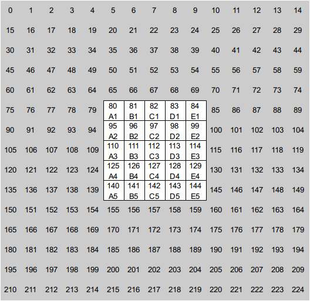

Create your own CPU opponent
ECMAScript version: Qt >= 6 is supported, providing compatibility with ECMAScript 6 and 7!
Computer opponents are scripted in a separate JavaScript file. If you want to create your own CPU opponent, you have to put the newly created .js file into the user folder ~/.local/share/stackandconquer/cpu/ (Linux) or into the sub folder cpu of the installation (Windows). After restarting the application, the script will appear in the settings dialogue for choosing an opponent. One can use any available script as a template.
When the script is loaded for the first time at game start, the (optional) function initCPU(empty_jsonBoard) is called, which could be used for initialization purposes and the empty board is passed as a parameter. No return value is expected. If initCPU doesn't exist, the game's script engine will not call it.
The only mandatory function is callCPU(jsonBoard), which is the interface between the game and the script and is called when it is the CPU's turn. The function has 1 parameter (the parameter name can be changed):
jsonBoard: The current board, encoded as a JSON string. It is an array containing the padding around the board and the board itself with the placed stones. Each field is represented as string (padding: "-", outside the board, only used for non-rectangular boards: "#", e.g. empty field: "", tower example: "112" = the second player's stone is on top).
The return value of callCPU() is an array of size 3 and must to contain a valid move (see chapter below). The game checks, if the CPU makes a valid move and throws an exception if it doesn't.
To give the game information about the opponent's strength, you can add a comment to the script file, e.g: // CPU strength: Very easy (single line comment) or * CPU strength: Very easy (within a multi-line comment)
Game object
Optionally, the game object can be used to retrieve additional information that may be useful in creating a strong CPU opponent. The following methods can be called:
game.getID(): Player ID (player 1 = 1, player 2 = 2, ...)game.getNumOfPlayers(): Number of playersgame.getHeightToWin(): Number of (minimum) stones to build a winning towergame.getTowersNeededToWin(): An array containing how many towers must be conquered for each player to win the gamegame.getNumberOfStones(): An array containing the number of stones left for each playergame.getLastMove(): The previous player's move, if the player moved a tower. Otherwise an empty array is returnedgame.getLegalMoves(): A list of all legal moves for the current player encoded as a JSON stringgame.getBoardDimensionX(): Width / number of columns of the boardgame.getBoardDimensionY(): Height / number of rows of the boardgame.getOutside(): Character used to define a field "outside" of the board, but within the board's x * y dimensions (only used for non-rectangular boards)game.getPadding(): Character used to define a padding field "around" the board x * y dimension (see picture below, grey is padding)
Additionally you can use game.log(...) to write messages into the StackAndConquer debug.log file, e.g.: game.log("Loading CPU script 'DummyCPU' with player ID " + game.getID());
Move
- A move is an array of size 3 containing only integers
- General move array: [index from, number of stones, index to]
- Example to place a stone on an empty field with index 80: [-1, 1, 80]
- Example to move 2 stones from field 80 to field 83: [80, 2, 83]
Board field indices (rectangular 5x5, padding 5)
